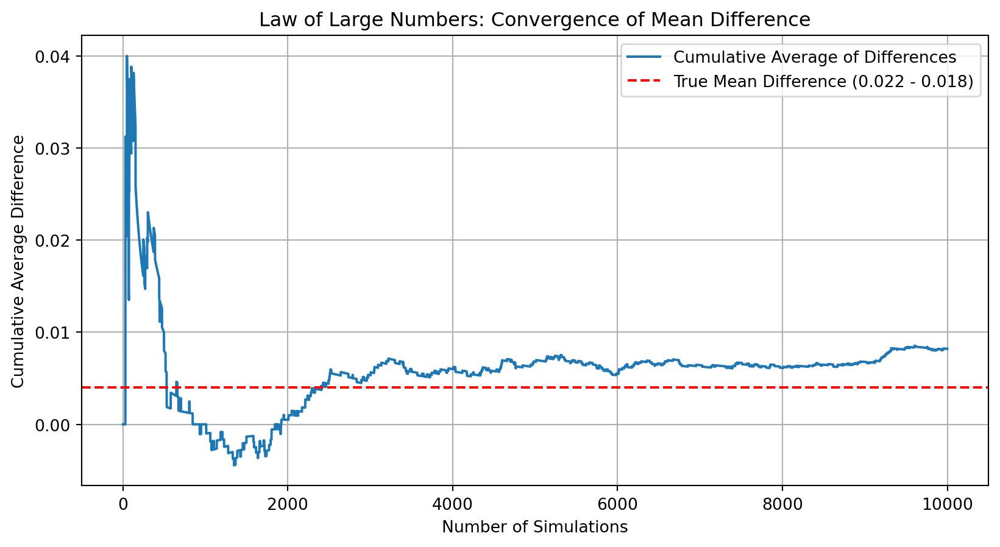
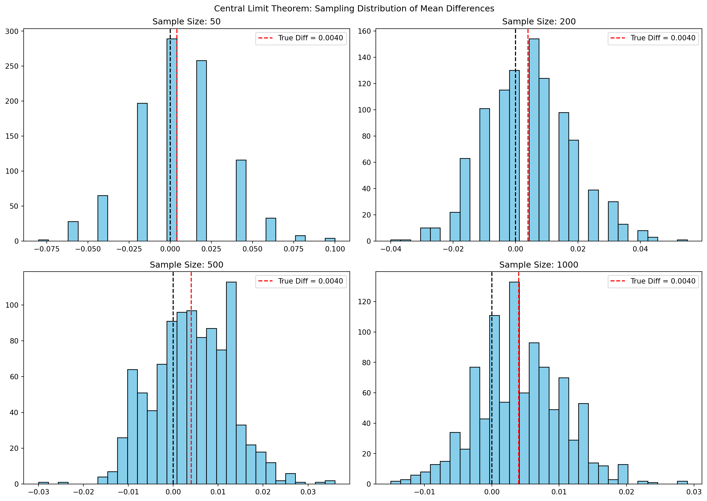

Dean Karlan at Yale and John List at the University of Chicago conducted a field experiment to test the effectiveness of different fundraising letters. They sent out 50,000 fundraising letters to potential donors, randomly assigning each letter to one of three treatments: a standard letter, a matching grant letter, or a challenge grant letter. They published the results of this experiment in the American Economic Review in 2007. The article and supporting data are available from the AEA website and from Innovations for Poverty Action as part of Harvard’s Dataverse.
The experiment randomly assigned individuals to receive either a standard fundraising letter or one that included a matching grant offer at different match ratios: $1:$1, $2:$1, or $3:$1. Some letters also varied the maximum amount that would be matched ($25,000, $50,000, $100,000, or unstated) and included different suggested donation amounts based on the recipient’s previous giving history. The researchers then tracked donation response rates and amounts to evaluate how price framing and match incentives affected giving behavior. This design allowed them to isolate the impact of price-based incentives while preserving the realism of a natural fundraising campaign.
This project seeks to replicate their results.
Data
Description
import pandas as pd# Load the datasetdata = pd.read_stata("karlan_list_2007.dta")# Get dataset dimensionsdata_shape = data.shape# Preview first few rowsdata_head = data.head()# Clean summary of non-null counts and data typesdata_summary = pd.DataFrame({'Column': data.columns,'Non-Null Count': data.notnull().sum().values,'Dtype': data.dtypes.values})# Basic descriptive statistics for numeric columnsdata_description = data.describe()# Display all in orderdata_shape, data_summary.head, data_description
The dataset contains 50,083 observations and 51 variables, each representing a prior donor who received a fundraising letter as part of a large-scale field experiment. Each row captures the characteristics of a single solicitation, including the treatment received (e.g., whether a matching grant was offered), attributes of the treatment (such as match ratio and suggested donation amount), and outcomes (e.g., whether the person gave and how much).
The variables span multiple data types, including binary indicators (treatment, control, ratio2, gave), categorical labels (ratio, size, ask), and continuous variables (amount, amountchange, median_hhincome). A subset of the variables describe donor behavior, while others reflect demographic or political attributes of the donor’s region (e.g., pwhite, psch_atlstba, perbush).
Most variables are complete, though a few—such as female, couple, and zip-code-level demographic indicators—contain some missing values. These variables will be useful for subgroup analysis or robustness checks later in the analysis.
Below is a table listing each variable and its definition.
Variable Definitions
Variable
Description
treatment
Treatment
control
Control
ratio
Match ratio
ratio2
2:1 match ratio
ratio3
3:1 match ratio
size
Match threshold
size25
$25,000 match threshold
size50
$50,000 match threshold
size100
$100,000 match threshold
sizeno
Unstated match threshold
ask
Suggested donation amount
askd1
Suggested donation was highest previous contribution
askd2
Suggested donation was 1.25 x highest previous contribution
askd3
Suggested donation was 1.50 x highest previous contribution
ask1
Highest previous contribution (for suggestion)
ask2
1.25 x highest previous contribution (for suggestion)
ask3
1.50 x highest previous contribution (for suggestion)
amount
Dollars given
gave
Gave anything
amountchange
Change in amount given
hpa
Highest previous contribution
ltmedmra
Small prior donor: last gift was less than median $35
freq
Number of prior donations
years
Number of years since initial donation
year5
At least 5 years since initial donation
mrm2
Number of months since last donation
dormant
Already donated in 2005
female
Female
couple
Couple
state50one
State tag: 1 for one observation of each of 50 states; 0 otherwise
nonlit
Nonlitigation
cases
Court cases from state in 2004-5 in which organization was involved
statecnt
Percent of sample from state
stateresponse
Proportion of sample from the state who gave
stateresponset
Proportion of treated sample from the state who gave
stateresponsec
Proportion of control sample from the state who gave
stateresponsetminc
stateresponset - stateresponsec
perbush
State vote share for Bush
close25
State vote share for Bush between 47.5% and 52.5%
red0
Red state
blue0
Blue state
redcty
Red county
bluecty
Blue county
pwhite
Proportion white within zip code
pblack
Proportion black within zip code
page18_39
Proportion age 18-39 within zip code
ave_hh_sz
Average household size within zip code
median_hhincome
Median household income within zip code
powner
Proportion house owner within zip code
psch_atlstba
Proportion who finished college within zip code
pop_propurban
Proportion of population urban within zip code
Balance Test
As an ad hoc test of the randomization mechanism, I provide a series of tests that compare aspects of the treatment and control groups to assess whether they are statistically significantly different from one another.
To evaluate whether the randomization successfully produced balanced treatment and control groups, I tested four pre-treatment covariates: mrm2 (months since last donation), years (years since initial donation), female, and nonlit (non-litigation activity in state). For each variable, I ran both a two-sample t-test and a simple linear regression with the variable as the outcome and treatment as the independent variable.
The results show no statistically significant differences at the 5% level between treatment and control for any of the covariates. Specifically, p-values from the t-tests were all above 0.05 (mrm2: 0.913, years: 0.274, nonlit: 0.114), except for female which was marginally significant (p = 0.065). These results were confirmed by the corresponding regression analyses.
Taken together, the evidence suggests that the treatment and control groups are well balanced across key pre-treatment variables, supporting the internal validity of the experimental design. This aligns with the findings shown in Table 1 of the original Karlan and List (2007) paper.
Experimental Results
Charitable Contribution Made
First, I analyze whether matched donations lead to an increased response rate of making a donation.
To analyze whether matching donations increased the likelihood of giving, I first plotted the share of donors in the treatment and control groups. The barplot clearly shows a higher proportion of individuals donating in the treatment group.
Statistical analysis confirms this difference. A t-test comparing the proportion of donors in each group yields a p-value of 0.0013, indicating the difference is statistically significant. A linear regression of gave on the treatment variable finds a coefficient of 0.0042 (p < 0.01), meaning that being assigned to the matching treatment increased donation likelihood by approximately 0.42 percentage points.
To further confirm the robustness of this finding, I estimated a probit regression where the binary outcome gave was predicted by treatment. The coefficient on treatment was 0.0868 and statistically significant at the 1% level (p = 0.002), replicating the findings in Table 3, Column 1 of Karlan and List (2007).
Taken together, these results indicate that individuals are more likely to give when presented with a matching donation opportunity — even without increasing the match ratio. This supports the hypothesis that perceived amplification of one’s donation can nudge charitable behavior.
Differences between Match Rates
Next, I assess the effectiveness of different sizes of matched donations on the response rate.
import pandas as pddata = pd.read_stata("karlan_list_2007.dta")# Filter only treatment groupmatch_data = data[data['treatment'] ==1].copy()from scipy.stats import ttest_ind# Define groupsratio1 = match_data[(match_data['ratio2'] ==0) & (match_data['ratio3'] ==0)]ratio2 = match_data[match_data['ratio2'] ==1]ratio3 = match_data[match_data['ratio3'] ==1]# T-testst_1v2 = ttest_ind(ratio1['gave'], ratio2['gave'], equal_var=False)t_2v3 = ttest_ind(ratio2['gave'], ratio3['gave'], equal_var=False)print(t_1v2)print(t_2v3)# Define baseline 1:1 match groupmatch_data['ratio1'] = ((match_data['ratio2'] ==0) & (match_data['ratio3'] ==0)).astype(int)import statsmodels.formula.api as smf# Regression: gave ~ ratio1 + ratio2 + ratio3 (although only two are needed since ratio1 is implied)model = smf.ols('gave ~ ratio2 + ratio3', data=match_data).fit()print(model.summary())ratio2_effect = model.params['ratio2']ratio3_effect = model.params['ratio3']diff_2v3 = ratio3_effect - ratio2_effect{"2:1 vs 1:1 (ratio2 coef)": ratio2_effect,"3:1 vs 2:1 (diff)": diff_2v3}
{'2:1 vs 1:1 (ratio2 coef)': 0.0018842510217149957,
'3:1 vs 2:1 (diff)': 0.00010002398025294552}
To evaluate whether larger match ratios increase donation rates, I analyzed only the treatment group and compared response rates across the three match levels: 1:1, 2:1, and 3:1.
I first conducted t-tests between each pair of match conditions: - The comparison between the 1:1 and 2:1 match ratios yielded a p-value of 0.335, indicating no statistically significant difference. - The 2:1 vs 3:1 match comparison also resulted in a non-significant p-value of 0.960.
Next, I regressed the donation indicator gave on the match ratio dummy variables ratio2 and ratio3, with 1:1 serving as the baseline category. The regression showed: - A coefficient of 0.0019 for 2:1 (p = 0.338) - A coefficient of 0.0020 for 3:1 (p = 0.313)
These coefficients suggest that while both higher match ratios slightly increased the probability of donating compared to 1:1, neither effect was statistically significant.
Finally, I calculated the difference in fitted effects: - 3:1 vs 2:1 match ratio: 0.0001, again showing virtually no difference.
These findings confirm the authors’ conclusion that while offering a match increases donations, increasing the match ratio (from 1:1 to 2:1 or 3:1) does not provide additional lift. This result supports the idea that donors respond to the presence of a match more than to its magnitude.
Size of Charitable Contribution
In this subsection, I analyze the effect of the size of matched donation on the size of the charitable contribution.
from scipy.stats import ttest_indimport statsmodels.formula.api as smfimport pandas as pddata = pd.read_stata("karlan_list_2007.dta")# Drop missing values for 'amount' and 'treatment'subset_all = data[['amount', 'treatment']].dropna()# T-testt_amount_all = ttest_ind( subset_all[subset_all['treatment'] ==1]['amount'], subset_all[subset_all['treatment'] ==0]['amount'], equal_var=False)# Linear regressionmodel_all = smf.ols('amount ~ treatment', data=subset_all).fit()print(t_amount_all)print(model_all.summary())subset_donors = data[(data['gave'] ==1)][['amount', 'treatment']].dropna()# T-testt_amount_donors = ttest_ind( subset_donors[subset_donors['treatment'] ==1]['amount'], subset_donors[subset_donors['treatment'] ==0]['amount'], equal_var=False)# Regression: conditional on givingmodel_donors = smf.ols('amount ~ treatment', data=subset_donors).fit()print(t_amount_donors)print(model_donors.summary())import matplotlib.pyplot as plt# Meansmean_treat = subset_donors[subset_donors['treatment'] ==1]['amount'].mean()mean_control = subset_donors[subset_donors['treatment'] ==0]['amount'].mean()# Plotfig, axes = plt.subplots(1, 2, figsize=(12, 5), sharey=True)# Control groupaxes[0].hist(subset_donors[subset_donors['treatment'] ==0]['amount'], bins=30, color='gray')axes[0].axvline(mean_control, color='red', linestyle='--', label=f'Mean: {mean_control:.2f}')axes[0].set_title("Control Group")axes[0].set_xlabel("Donation Amount")axes[0].legend()# Treatment groupaxes[1].hist(subset_donors[subset_donors['treatment'] ==1]['amount'], bins=30, color='blue')axes[1].axvline(mean_treat, color='red', linestyle='--', label=f'Mean: {mean_treat:.2f}')axes[1].set_title("Treatment Group")axes[1].set_xlabel("Donation Amount")axes[1].legend()plt.suptitle("Distribution of Donation Amounts (Among Donors Only)")plt.tight_layout()plt.show()
To understand how the matching offer influenced donation size, I examined both the unconditional and conditional effects of treatment on donation amount.
Unconditional Analysis
In the full sample (including non-donors), the average donation in the treatment group was slightly higher than in the control group. The regression estimated an increase of $0.15 in donation amount due to treatment, with a p-value of 0.063 — marginally outside conventional thresholds for statistical significance. The corresponding t-test returned a p-value of 0.056. These results suggest that treatment slightly increases overall donation revenue per solicitation, though the evidence is only borderline significant.
Conditional on Giving
Restricting the analysis to only those who donated, the story changes. Among donors, the average contribution was $45.54 in the control group and $43.87 in the treatment group. The regression coefficient for treatment was -1.67 (p = 0.561), and the t-test similarly showed no significant difference. This implies that while treatment encourages more people to give, it does not increase how much they give once they decide to donate.
Visual Comparison
The histogram plots for each group show very similar distributions of donation amounts. Both groups are right-skewed, and the means (marked with red dashed lines) are nearly identical. This further supports the conclusion that matching incentives affect donation participation more than donation size.
Overall, these findings reinforce the idea that the matching offer works by nudging people to give at all, rather than prompting those already willing to give to give more.
Simulation Experiment
As a reminder of how the t-statistic “works,” in this section I use simulation to demonstrate the Law of Large Numbers and the Central Limit Theorem.
Suppose the true distribution of respondents who do not get a charitable donation match is Bernoulli with probability p=0.018 that a donation is made.
Further suppose that the true distribution of respondents who do get a charitable donation match of any size is Bernoulli with probability p=0.022 that a donation is made.
Law of Large Numbers
import numpy as npimport matplotlib.pyplot as plt# Set seed for reproducibilitynp.random.seed(42)# Simulate 10,000 Bernoulli draws for each groupcontrol_draws = np.random.binomial(1, 0.018, size=10000)treatment_draws = np.random.binomial(1, 0.022, size=10000)# Compute difference vectordiffs = treatment_draws - control_draws# Cumulative average of differencescumulative_avg = np.cumsum(diffs) / np.arange(1, len(diffs) +1)# Plotplt.figure(figsize=(10, 5))plt.plot(cumulative_avg, label='Cumulative Average of Differences')plt.axhline(0.004, color='red', linestyle='--', label='True Mean Difference (0.022 - 0.018)')plt.xlabel("Number of Simulations")plt.ylabel("Cumulative Average Difference")plt.title("Law of Large Numbers: Convergence of Mean Difference")plt.legend()plt.grid(True)plt.show()

To illustrate the LLN, I simulated 10,000 Bernoulli draws from each distribution and computed the difference in donation outcomes for each simulated pair. Then, I plotted the cumulative average of these differences.
The plot shows that although early differences fluctuate, the average steadily converges to the true mean difference (0.004) as the number of observations increases. This mirrors the LLN, which states that sample averages converge to expected values as sample size grows.
Central Limit Theorem
import numpy as npimport matplotlib.pyplot as pltnp.random.seed(42)sample_sizes = [50, 200, 500, 1000]true_diff =0.022-0.018fig, axes = plt.subplots(2, 2, figsize=(14, 10))axes = axes.flatten()for i, n inenumerate(sample_sizes): diffs = []for _ inrange(1000): control_sample = np.random.binomial(1, 0.018, size=n) treatment_sample = np.random.binomial(1, 0.022, size=n) mean_diff = treatment_sample.mean() - control_sample.mean() diffs.append(mean_diff) axes[i].hist(diffs, bins=30, color='skyblue', edgecolor='black') axes[i].axvline(0, color='black', linestyle='--') axes[i].axvline(true_diff, color='red', linestyle='--', label=f'True Diff = {true_diff:.4f}') axes[i].set_title(f'Sample Size: {n}') axes[i].legend()plt.suptitle("Central Limit Theorem: Sampling Distribution of Mean Differences")plt.tight_layout()plt.show()

To illustrate the CLT, I simulated the difference in average donation outcomes between treatment and control groups across varying sample sizes (n = 50, 200, 500, 1000), repeating the process 1,000 times for each size.
The histograms below show the distribution of these 1,000 average differences. As expected: - Smaller samples (n = 50) produce more spread-out, irregular distributions. - Larger samples (n = 1000) produce narrow, bell-shaped distributions centered closer to the true difference (0.004).
This highlights that the sampling distribution of the mean becomes approximately normal and tighter with larger sample sizes — the core insight behind the CLT. It also justifies the use of t-statistics and confidence intervals in experimental data analysis.
Together, these simulations reinforce why large samples yield more reliable statistical inference.